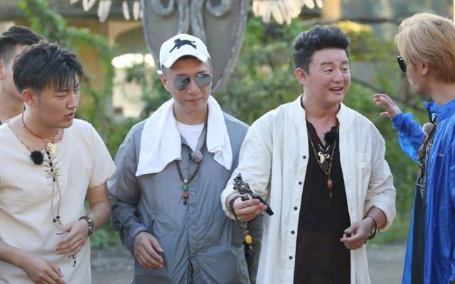

公告——
昵称：卡卡罗特
博客年龄：2年
粉丝：350w
关注：600
搜索——
热门标签——
留言板——
《极限挑战》收官，节目依然精彩，网友：期待渤哥的新电影！
最近，很多综艺节目都迎来了收官，上周末播出的《极限挑战》也不例外，这期也是迎来了《极挑》 第四季的最后一期，更是面临了节目的“收官之战”，而最后两期的节目，导演也是非常的慷慨讲义 气。因为黄渤最近也在和很多演员一样，转型成为导演，他导演的第一部作品也是马上就要上映了， 所以这两期的《极限挑战》也是直接以“寻宝探险”的形式，来展开了一场非常的精彩有趣的节目。
其实《一出好戏》确实是黄渤导演的电影，但是他本人和王迅也是都参与到了电影中出演了角色， 这点我们也不是很意外，但是不光是黄渤和王迅，孙红雷和张艺兴也参演了这个电影，但是孙红 雷的戏份却被黄渤给剪掉了，孙红雷对这件事也是一直“耿耿于怀”，在节目中还“质问”起了黄渤， 也是非常的搞笑，不知道到时候会不会作为彩蛋剪辑在片尾。难怪这次能以“一出好戏”为主题， 其实确实每期的节目都是一出好戏。
我们都知道，在娱乐圈中，黄渤是出了名的情商高，会说话，即便长的不是很帅，却有很多粉丝都 喜欢他，人品非常的好，同时也是一个颇具实力的演技派。这一次他也是很不错，自己导演的第一 部电影，还没有忘记男人帮的兄弟们，把他们叫到了电影中出演角色，张艺兴更是在黄渤的电影中 突破自己以往的形象，留着爆炸头的他，据说要吃生鱼，也是让人很期待渤哥的这部新电影。
这期的节目非常的有意思，同时做的也非常的走心，他们不仅走到了“无忧岛”上，还遇到了于和伟 扮演的大统领率领的民众，这几位演员聚在一起确实也非常的好玩，还玩起了呲水枪，穿上了小恐 龙衣服，甚至还戴上了“三级头”，画面非常的搞笑，也是很有童心。特别是孙红雷在节目中的表现 ，也是再一次让观众们都笑喷了。不过这期节目最后通往现实世界出现的摆渡人，其实都是曾经在 节目中的演员们，也让大家回忆起了很多曾经美好的记忆。
因为电影的主题是一出好戏，所以收官这期的节目导演也是交给了黄渤，不过这期节目做得确实依然 很精彩，也非常的有意思，同时也没有忘记艺兴，让观众非常的感动。最后的结尾，几个兄弟为了帮 黄渤逃出“无忧岛”，都选择了“牺牲自己”，最后只有黄渤一个人逃了出去，看着他们的记忆一点一点 的被“删除”，却让人非常的感动，相信很多观众也不由自主的流下了感动的泪水，节目有笑有泪， 确实可以说是一出好戏了。